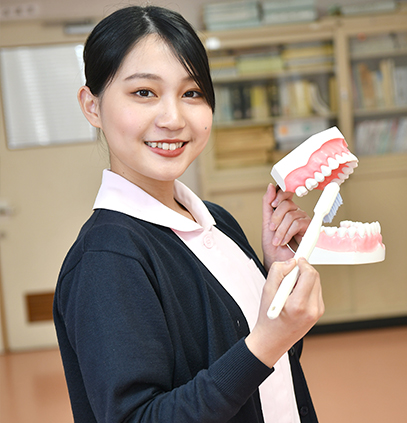
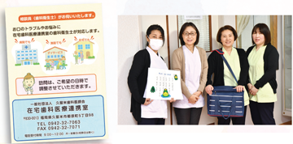

就職について
主な就職実績をご紹介します
就職実績- 歯科、小児歯科、矯正歯科などの一般歯科診療所（歯科医院）
- 久留米大学病院
- 聖マリア病院
- 九州中央病院
- 日本赤十字社
- 福岡赤十字病院など総合病院
- 八女リハビリテーション病院
- 柳川リハビリテーション病院など、リハビリ専門病院
- 老人保護施設
- 官公庁
- 企業内の健康管理室
- 株式会社プラトンジャパン九州営業所などの歯科器材メーカーや歯科関連企業
- 形成外科(審美歯科)
- 久留米市役所
- 久留米市保健所
- 保険福祉センターなど行政省庁
- 久留米歯科衛生専門学校など、歯科衛生士養成機関の専任教員
- 久留米在宅歯科医療連携室
卒業で取得できる資格
介護職員初任者研修認定
卒業後のキャリア・アップ卒業後、福岡医療短期大学にプラス1年間編入で
学士を取得できます!(口腔保健学)
卒業後、福岡医療短期大学歯科衛生学科専攻科に進学し、文部科学省の審査に合格すると、4年制大学卒と同等の「学士」が授与されます。
歯科衛生士として現場で5年以上勤務し、
試験と実務研修を経た上で
ケアマネージャー
(介護支援専門員)の資格を取得できます！
卒業生メッセージ
REAL VOICE
東京都内歯科医院勤務 35期卒業嶽本 朱里さん
卒業生インタビュー
Q/ 卒業後、いきなり東京に行かれて就職された理由は何でしょう。
A/ 都会への憧れのようなものがありましたし、なによりも一人で生活して今までとは違った自分をみたかったのかなと思います。
Q/ 出産の前後は産休は取られましたか。
A/ その時勤めていた医院はパート扱いだったので、いったん退職をして子育てが落ち着いたころに今の医院に復職しました。
Q/ 現在お勤めの医院は正社員として勤務されているということですが、子育てとの両立はいかがですか。
A/ 19時までが勤務時間なので、それから保育園に急いでお迎えに行きます。そこから夕飯の用意をしたりするので、バタバタとしますが、大変な分充実しています。
Q/ 元気盛りの男の子お二人ですので大変ですね。仕事内容について教えてください。
A/ インプラントがメインの医院なのですが、それまで経験がなかったので、慣れるのに少し大変でした。でも、新たな事にチャレンジできる喜びもありました。また、実習生が勉強に来ていて、若い彼女たちとのふれあいは楽しい時間です。
Q/ 学生時代の思い出や感想を聞かせてください。
A/ とにかく楽しい時間でした！国家試験に向けてみんなで励ましあいながら一緒に勉強したことや、何よりもそれをサポートしてくれる先生方の熱意が心強かったですね。
久留米市内歯科医院勤務 41期卒業古賀 美咲さん


Q/ 新卒で就職されてもうすぐ1年ですが、感想を聞かせてください。
A/ とても働きやすい職場です！わからないところはすぐに聞くことができる雰囲気ですし、段階的に経験させていただいているので戸惑うようなことはなかったですね。
Q/ 患者さんとのコミュニケーションはどうでしょうか。
A/ まだ距離感がうまくとれていないと感じる時もありますが、メンテナンスの時に気持ちよかったとか、痛くなくて助かったと言っていただいた時は嬉しいです。
Q/ 歯科衛生士という職業を選んだ理由はなんでしょう。
A/ 両親が医療関係の仕事に就いていたのが大きいと思います。両親の勧めもあり医院を見学して歯科衛生士になろうと決めました。
Q/ 将来はどんな歯科衛生士を目指していますか。
A/ メンテナンスや予防の技術を上げて行きたいと思います。きれいで健康な歯を実感していただけるように頑張りたいです。
Q/ 在学中の3年間はちょうどコロナ禍の最中でしたが、どうでしたか。
A/ 入学してすぐのリモート授業や、行事がなくなったのは残念でしたが、分散登校も早い時期から始まりましたので、みんなと仲良くなり、今でもよく会ってます。
Q/ 歯科衛生士を目指す方に一言お願いします。
A/ 専任の先生方がとにかく親身になって接してくれますので、この仕事をやってみたいという強い気持ちがあるのなら、とても楽しい学校だと思いますよ。